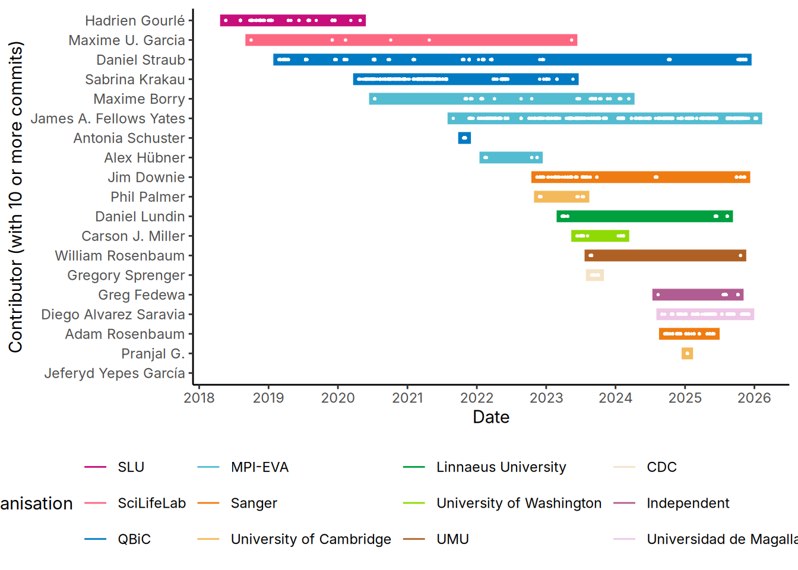
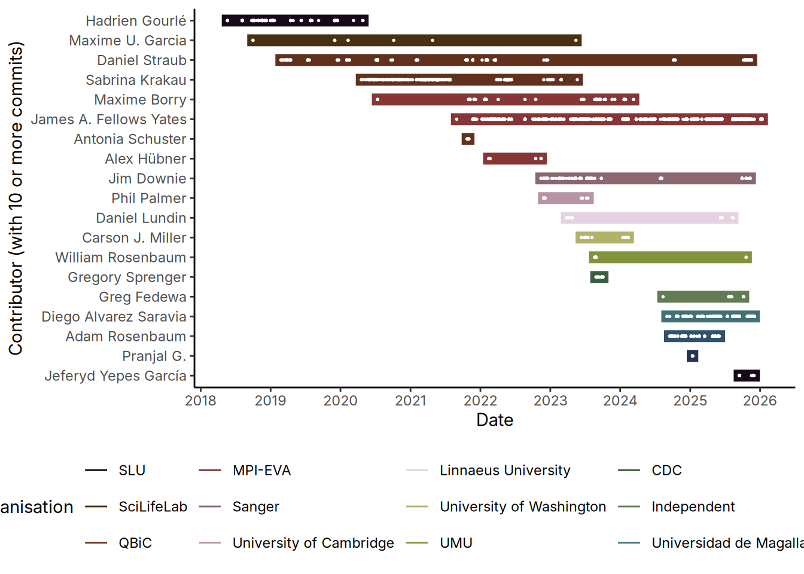
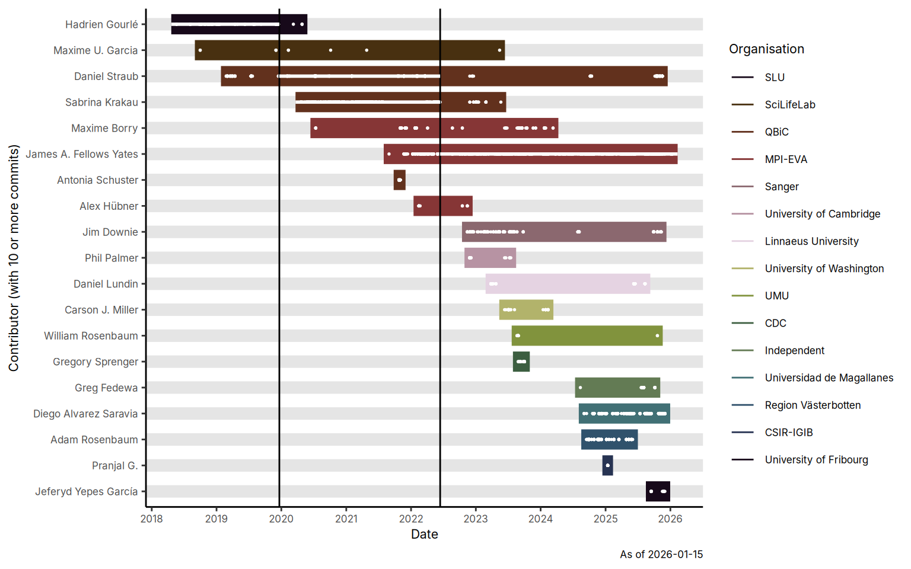

git clone --depth 1 git@github.com:nf-core/mag.git
git -C ~/git/nf-core/mag --no-pager log --pretty=format:"%h%x09%an%x09%ad%x09%s" --date=iso | cut -f 2-3 > "nf-core-mag_contribs.tsv"
rm -rf mag/Cloning into 'mag'...This notebook describes how you can generate a Wikipedia band-member timeline plot from a Git repo.
To get raw data, you can use the following command on a Git repo (make sure to update the location of repo)
We do a shallow clone to make the cloning process faster, generate the contribution information from the log command, and then delete the shallow clone after.
git clone --depth 1 git@github.com:nf-core/mag.git
git -C ~/git/nf-core/mag --no-pager log --pretty=format:"%h%x09%an%x09%ad%x09%s" --date=iso | cut -f 2-3 > "nf-core-mag_contribs.tsv"
rm -rf mag/Cloning into 'mag'...Load relevant libraries
library(readr)
library(janitor)
Attaching package: 'janitor'The following objects are masked from 'package:stats':
chisq.test, fisher.testlibrary(tidyr)
library(stringr)
library(dplyr)
Attaching package: 'dplyr'The following objects are masked from 'package:stats':
filter, lagThe following objects are masked from 'package:base':
intersect, setdiff, setequal, unionlibrary(lubridate)
Attaching package: 'lubridate'The following objects are masked from 'package:base':
date, intersect, setdiff, unionlibrary(tibble)
library(ggplot2)
library(paletteer)
sessionInfo()R version 4.4.1 (2024-06-14)
Platform: x86_64-pc-linux-gnu
Running under: Ubuntu 24.04.3 LTS
Matrix products: default
BLAS: /usr/lib/x86_64-linux-gnu/blas/libblas.so.3.12.0
LAPACK: /usr/lib/x86_64-linux-gnu/lapack/liblapack.so.3.12.0
locale:
[1] LC_CTYPE=en_GB.UTF-8 LC_NUMERIC=C
[3] LC_TIME=en_GB.UTF-8 LC_COLLATE=en_GB.UTF-8
[5] LC_MONETARY=en_GB.UTF-8 LC_MESSAGES=en_GB.UTF-8
[7] LC_PAPER=en_GB.UTF-8 LC_NAME=C
[9] LC_ADDRESS=C LC_TELEPHONE=C
[11] LC_MEASUREMENT=en_GB.UTF-8 LC_IDENTIFICATION=C
time zone: Europe/Berlin
tzcode source: system (glibc)
attached base packages:
[1] stats graphics grDevices utils datasets methods base
other attached packages:
[1] paletteer_1.6.0 ggplot2_3.5.1 tibble_3.2.1 lubridate_1.9.3
[5] dplyr_1.1.4 stringr_1.5.1 tidyr_1.3.1 janitor_2.2.1
[9] readr_2.1.5
loaded via a namespace (and not attached):
[1] gtable_0.3.5 jsonlite_1.8.8 rematch2_2.1.2 compiler_4.4.1
[5] tidyselect_1.2.1 snakecase_0.11.1 scales_1.3.0 yaml_2.3.8
[9] fastmap_1.1.1 R6_2.5.1 generics_0.1.3 knitr_1.50
[13] htmlwidgets_1.6.4 munsell_0.5.1 pillar_1.9.0 tzdb_0.4.0
[17] rlang_1.1.6 utf8_1.2.4 stringi_1.8.3 xfun_0.52
[21] timechange_0.3.0 cli_3.6.5 withr_3.0.0 magrittr_2.0.3
[25] digest_0.6.35 grid_4.4.1 rstudioapi_0.16.0 hms_1.1.3
[29] lifecycle_1.0.4 vctrs_0.6.5 evaluate_0.23 glue_1.8.0
[33] colorspace_2.1-0 fansi_1.0.6 rmarkdown_2.27 purrr_1.0.2
[37] tools_4.4.1 pkgconfig_2.0.3 htmltools_0.5.8.1We can then load the data and do some basic cleaning.
data_raw <- read_tsv(paste0("nf-core-mag_contribs.tsv"), col_names = c("committer", "date_of_commit")) |> clean_names()Rows: 3872 Columns: 2
── Column specification ────────────────────────────────────────────────────────
Delimiter: "\t"
chr (2): committer, date_of_commit
ℹ Use `spec()` to retrieve the full column specification for this data.
ℹ Specify the column types or set `show_col_types = FALSE` to quiet this message.data_committers <- data_raw |>
select(committer) |>
unique() |>
arrange(committer) |>
write_tsv(paste0("nf-core-mag_contribs_list.tsv"))Now we have to do some manual clean up of the git log output, as in some cases we may only have GitHub handle(s!) rather than a name, and also we want to annotate with organisation each member was/is a member of.
I have separately made a user-name-org database file manually that we can load and bind onto our git log data
data_contributor_db <- read_tsv("nf-core-mag-contribs_db.tsv")Warning: One or more parsing issues, call `problems()` on your data frame for details,
e.g.:
dat <- vroom(...)
problems(dat)Rows: 66 Columns: 4
── Column specification ────────────────────────────────────────────────────────
Delimiter: "\t"
chr (4): committer, name, organisation, organisation_colour
ℹ Use `spec()` to retrieve the full column specification for this data.
ℹ Specify the column types or set `show_col_types = FALSE` to quiet this message.data_full <- left_join(data_raw, data_contributor_db)Joining with `by = join_by(committer)`We can then use this information plus other information to filter and summarise the table with the commit history, namely: remove bots, and remove users with less than a given number of commits.
In this case we will only include contributors with more than 10 commits.
data_filtered_n_commits <- data_full |>
group_by(name) |>
summarise(n_commits = n()) |>
arrange(desc(n_commits)) |>
filter(name != "bot", n_commits >= 10)We can then filter the table for the people with more than 10 commits, and then calculate and then calculate their weekly commits.
data_weekly_commits <- data_full |>
mutate(week = cut.Date(as.Date(date_of_commit), breaks = "1 week")) |>
select(name, organisation, organisation_colour, week) |>
filter(name %in% data_filtered_n_commits$name)We can also extract the timestamp for the plot
data_timestamp <- data_full |> select(date_of_commit) |> arrange(date_of_commit) |> last() |> pull() |> as_date()Now we can reduce our full history, and then extract their first and last commit date. We will then reorder and fix the order of names for plotting purposes.
data_final_start_stop <- data_weekly_commits |>
select(name, week, organisation) |>
filter(name %in% data_filtered_n_commits$name) |>
group_by(name) |>
summarise(
first_commit = as_date(last(week)),
latest_commit = as_date(first(week)),
organisation = unique(organisation)
) |>
arrange(first_commit, latest_commit) |>
mutate(name = factor(name, levels = name),
organisation = factor(organisation, levels = unique(organisation)),
first_commit = first_commit - 30,
latest_commit = latest_commit + 30
)Here is a basic plot using a palette with a sufficient number of colours
plot_wikipedia_style <- ggplot(data_final_start_stop, aes(x = first_commit, y = name, colour = organisation)) +
geom_segment(aes(xend = latest_commit, yend = name, linewidth = 10)) +
geom_point(data = data_weekly_commits, aes(x = as_date(week), y = name), colour = 'white', size = 0.3) +
scale_x_date(date_breaks = "1 year", date_minor_breaks = "4 months", date_labels = "%Y", labels = label_at(1)) +
scale_y_discrete(limits = rev(levels(data_final_start_stop$name))) +
theme_classic(base_family = 'Inter') +
scale_colour_paletteer_d("LaCroixColoR::paired", ) +
theme(legend.position = "bottom", text = element_text(family = "Inter")) +
guides(linewidth = "none") +
xlab("Date") +
ylab("Contributor (with 10 or more commits)") +
labs(colour = 'Organisation')
plot_wikipedia_style
To make a nicer looking image we can take the primary colours of each organisation and use this to fill the bars.
This information I included in the source file for data_contributor_db, and colour picked from each organisations website.
palettes_orgs <- data_contributor_db |>
select(organisation, organisation_colour) |>
distinct() |>
filter(!is.na(organisation)) |>
deframe()Finally we can try to plot the timeline
plot_wikipedia_style_orgcolours <- plot_wikipedia_style + scale_colour_manual(values = palettes_orgs)Scale for colour is already present.
Adding another scale for colour, which will replace the existing scale.plot_wikipedia_style_orgcolours
We can also customise this slightly to indicate handovers of primary development teams
theme_alternating_grid <- function() {
theme_classic() +
theme(
panel.grid.major.y = element_line(color = "grey90", size = 3.7),
panel.grid.minor.y = element_line(color = "white"),
text = element_text(family = "Inter", size = 8)
)
}
plot_wikipedia_style_orgcoloursannotations <- plot_wikipedia_style_orgcolours +
theme_alternating_grid() +
geom_vline(xintercept = as.numeric(date('2019-12-21'))) + ## Hadrien - Sabrina/Daniel handover, based on first release made on GH
geom_vline(xintercept = as.numeric(date('2022-06-14'))) + ## Sabrina/Daniel - James handover, based on first release made on GH
geom_segment(data = data_final_start_stop |> filter(name == 'Hadrien Gourlé'), xend = as.numeric(date('2019-12-21')), aes(yend = name, linewidth = 5), colour = '#FFFFFF') +
geom_segment(data = data_final_start_stop |> filter(name == 'Sabrina Krakau'), xend = as.numeric(date('2022-06-14')), aes(yend = name, linewidth = 5), colour = '#FFFFFF') +
geom_segment(data = data_final_start_stop |> filter(name == 'Daniel Straub'), x = as.numeric(date('2019-12-21')), xend = as.numeric(date('2022-06-14')), aes(yend = name, linewidth = 5), colour = '#FFFFFF') +
geom_segment(data = data_final_start_stop |> filter(name == 'James A. Fellows Yates'), x=as.numeric(date('2022-06-14')), aes(xend = latest_commit, linewidth = 5), colour = '#FFFFFF') +
labs(caption = paste0('As of ', as.character(data_timestamp)))Warning: The `size` argument of `element_line()` is deprecated as of ggplot2 3.4.0.
ℹ Please use the `linewidth` argument instead.plot_wikipedia_style_orgcoloursannotations
ggsave(plot_wikipedia_style_orgcoloursannotations, filename = 'nf-core-mag-contributors-timeline-plot.png', device = 'png', height=107, width = 178, units = 'mm', dpi=300)
ggsave(plot_wikipedia_style_orgcoloursannotations, filename = 'nf-core-mag-contributors-timeline-plot.svg', device = 'svg', height=107, width = 178, units = 'mm', dpi=300)